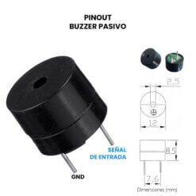
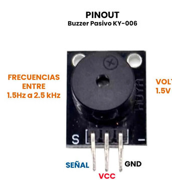

¡Hola de nuevo, inventores urbanos! Hasta ahora hemos encendido luces y aprendido a escuchar botones. Pero en el mundo real, la tecnología tiene un propósito más alto: resolver problemas reales y hacer el mundo más accesible.
Hoy nos convertiremos en ingenieros de tráfico urbano. Vamos a fusionar lo que ya conocemos para construir un Semáforo Inteligente e Inclusivo: un sistema que detenga el tráfico vehicular cuando un peatón lo solicite, y que además emita alertas sonoras intermitentes para ayudar a cruzar de forma segura a personas con debilidad visual.
🌟 El Protagonista de Hoy: El Zumbador Pasivo (Buzzer)
Es hora de hacer ruido. El buzzer pasivo es un pequeño componente que, a diferencia de un LED que emite luz continua, necesita recibir ondas eléctricas a diferentes velocidades para vibrar y generar tonos audibles. En Arduino usamos el comando tone(pin, frecuencia, duracion); para decirle exactamente qué nota tocar y por cuánto tiempo.


🔌 El Circuito: Manos a la Obra
Montaremos una verdadera intersección vial en nuestra protoboard: 3 LEDs para los automóviles, 2 LEDs para los peatones, un botón pulsador con resistencia interna y nuestro nuevo Buzzer. ¡Cuida mucho tus conexiones y el orden de los cables!
Componentes Necesarios:
| Cant. | Componente |
|---|---|
| 1 | Placa Arduino UNO y Protoboard |
| 3 | LEDs de Autos (1 Rojo, 1 Amarillo, 1 Verde) |
| 2 | LEDs Peatonales (1 Rojo, 1 Verde) |
| 5 | Resistencias de 220Ω (una para cada LED) |
| 1 | Pulsador táctil (Botón) |
| 1 | Buzzer Pasivo |
| Varios | Cables Jumper |
⚡ Diagrama de armado: Intersección Vial

💡 Conceptos Clave
El Gran Dilema: El "Código Espagueti" y el Control del Tráfico
Imagina la escena: tienes que apagar el verde de autos, encender el amarillo, luego el rojo; inmediatamente después, apagar el rojo peatonal, encender el verde peatonal y hacer que el buzzer pite de forma intermitente. Si intentamos escribir todo esto directamente dentro del void loop(), se convertirá en lo que llamamos "Código Espagueti": un bloque de texto gigante, desordenado y casi imposible de leer. La solución de un verdadero programador es usar Funciones Personalizadas.
- Funciones Personalizadas (
void): Bloques de código que tú inventas y nombras, y que el programa principal puede llamar en cualquier momento para mantener el orden. - Comando
tone(): La función que permite al Arduino generar ondas cuadradas en un pin específico para producir sonidos audibles de una frecuencia y duración exacta. INPUT_PULLUP: Un truco de software para conectar botones al Arduino de forma directa, activando una resistencia interna y eliminando el ruido eléctrico sin usar componentes externos.
🧠 El Código: Creando Nuestro Propio Comando
En este programa, en lugar de amontonar código, sacaremos toda la secuencia de luces del loop() y la empaquetaremos en una función nueva que nosotros inventaremos llamada activarPasoPeatonal(). ¡Observa la limpieza!
/*
* Misión 03: ¡El Semáforo Inteligente Inclusivo!
* Descripción: Aprendiendo a programar funciones personalizadas para coordinar
* un sistema interactivo de tráfico con asistencia auditiva por buzzer.
* Por: Profe Campos
* CECyTEM 05 Guacamayas
*/
// Pines del Semáforo de Autos
int cocheVerde = 10;
int cocheAmarillo = 11;
int cocheRojo = 12;
// Pines del Semáforo Peatonal
int peatonVerde = 8;
int peatonRojo = 9;
// Asistentes del sistema
int pinBuzzer = 7;
int botonPeaton = 2;
void setup() {
// Configuramos pines de iluminación y sonido como SALIDAS
pinMode(cocheVerde, OUTPUT);
pinMode(cocheAmarillo, OUTPUT);
pinMode(cocheRojo, OUTPUT);
pinMode(peatonVerde, OUTPUT);
pinMode(peatonRojo, OUTPUT);
pinMode(pinBuzzer, OUTPUT);
// Activamos el pull-up interno para el botón (Recuerda: Presionado = LOW)
pinMode(botonPeaton, INPUT_PULLUP);
// Estado inicial seguro: Autos avanzan, peatones esperan en rojo
digitalWrite(cocheVerde, HIGH);
digitalWrite(peatonRojo, HIGH);
}
void loop() {
// El loop se mantiene limpio y veloz, vigilando el botón constantemente
if (digitalRead(botonPeaton) == LOW) {
// ¡Invocamos nuestro comando personalizado! El programa salta a ejecutarlo
activarPasoPeatonal();
}
}
// =======================================================
// NUESTRO COMANDO PERSONALIZADO (Fuera del loop)
// =======================================================
void activarPasoPeatonal() {
// 1. Transición de precaución para autos
digitalWrite(cocheVerde, LOW);
digitalWrite(cocheAmarillo, HIGH);
delay(2000);
// 2. Autos se detienen
digitalWrite(cocheAmarillo, LOW);
digitalWrite(cocheRojo, HIGH);
delay(1000); // Margen de seguridad antes de dar paso al peatón
// 3. Cruce peatonal con asistencia sonora
digitalWrite(peatonRojo, LOW);
digitalWrite(peatonVerde, HIGH);
// Pitido 1
tone(pinBuzzer, 800, 300); // Emite tono de 800Hz por 300ms
delay(600);
// Pitido 2
tone(pinBuzzer, 800, 300);
delay(600);
// Pitido 3
tone(pinBuzzer, 800, 300);
delay(600);
// 4. Advertencia de que el tiempo se acaba (Parpadeo y sonido rápido)
digitalWrite(peatonVerde, LOW); tone(pinBuzzer, 1200, 150); delay(300);
digitalWrite(peatonVerde, HIGH); delay(300);
digitalWrite(peatonVerde, LOW); tone(pinBuzzer, 1200, 150); delay(300);
digitalWrite(peatonVerde, HIGH); delay(300);
// 5. Fin del cruce peatonal
digitalWrite(peatonVerde, LOW);
digitalWrite(peatonRojo, HIGH);
delay(1000); // Margen de seguridad antes de arrancar autos
// 6. Autos vuelven a avanzar
digitalWrite(cocheRojo, LOW);
digitalWrite(cocheVerde, HIGH);
}
🚀 ¡Inténtalo Tú Mismo! (Retos)
- 🚨 La Alerta de Ceguera del Conductor: Modifica tu función personalizada para que cuando el semáforo de autos pase a Rojo, el buzzer emita un único pitido súper agudo y largo (ej. 2000 Hz por 400 milisegundos) antes de que se encienda el verde peatonal.
- 🌙 Modo Tráfico Nocturno (Reto Pro): Dentro del
void loop(), comenta la llamada al semáforo y escribe un código donde solo el LED Amarillo de los autos parpadee infinitamente (alerta de crucero en la madrugada).